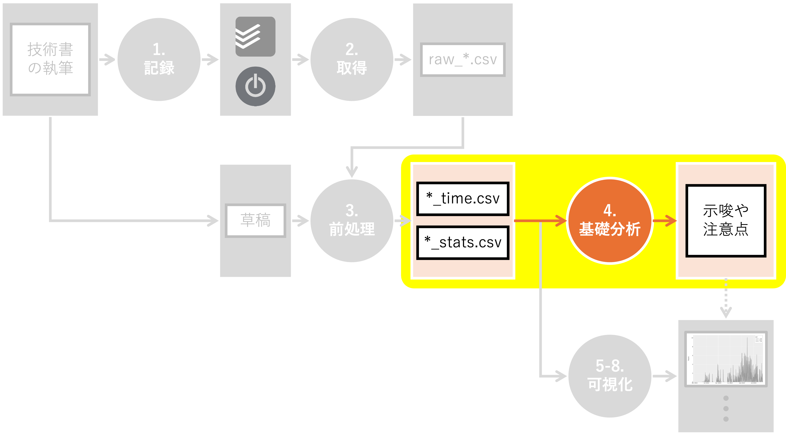

4. 基礎分析#

Summary
このページは長すぎるうえ、以降の可視化内容と重複があるため読み飛ばしてOKです
執筆時間は、2023年末から2024年前半、2025年12月から2026年1月にとくに増加した
草稿は合計約80万文字。1行あたり約25字、1文あたり約100文字だった
以下のデータに対して基礎分析を行います：
writing_time.csv：本書執筆に関する作業時間を格納したファイルsleeping_time.csv：本書執筆中の睡眠時間を格納したファイルdraft_stats.csv：本書の草稿に関する集計情報を格納したファイル
基礎分析とは、データの全体像を把握し、データの特性や傾向を理解するための分析です。 具体的には、欠損値や重複データの確認、各変数の分布の把握、変数間の関係性の探索などを行います。
本ブログでは、本書に倣って以下の方針を採用しています：
基礎分析に「可視化」は含まない
基礎分析は「全体像の把握」と「各列の深堀り」から成る
その根拠等は本書を参照ください。
4.1. 環境構築#
前処理を行うために必要なライブラリをインポートし、変数を定義します。 また、データの入出力先となるディレクトリも作成しておきます。
Show code cell content
# ファイルパスを扱うためのPathlibモジュールをインポート
from pathlib import Path
# データ処理・分析ライブラリのPandasをインポート
import pandas as pd
Show code cell content
# 基礎分析の対象となるディレクトリのパス
DIR_IN = Path("../../data/tmp")
# 基礎分析対象となるファイル名
FN_WRITING = "writing_time.csv"
FN_SLEEPING = "sleeping_time.csv"
FN_DRAFT = "draft_stats.csv"
4.2. 執筆時間の基礎分析#
本書の執筆時間を格納した writing_time.csvの基礎分析を行います。
writing_time.csvは以下の列を持つCSVファイルです。
date：執筆作業を実施した日付seconds：執筆作業の継続秒数category：執筆作業の属するカテゴリーtask：執筆作業のタスク名
4.2.1. 全体像の把握#
全体像を眺めてみましょう。
まずはファイルを読み込み、seconds列からhours列を作成します。
Show code cell content
# pd.read_csv()関数を用いて、CSVファイルをDataFrameとして読み込む
df_writing = pd.read_csv(DIR_IN / FN_WRITING)
# 新しい列"hours"を作成し、"seconds"列の値を3600で割ることで時間に変換
df_writing["hours"] = df_writing["seconds"] / 3600
headメソッドで先頭5行を見てみましょう。
Show code cell content
# headメソッドで概要を把握
df_writing.head()
| date | seconds | category | task | hours | |
|---|---|---|---|---|---|
| 0 | 2021-12-08 | 1072 | プロトタイピング | プロトタイピング | 0.297778 |
| 1 | 2021-12-08 | 203 | プロトタイピング | プロトタイピング | 0.056389 |
| 2 | 2021-12-08 | 1094 | プロトタイピング | プロトタイピング | 0.303889 |
| 3 | 2021-12-08 | 862 | プロトタイピング | プロトタイピング | 0.239444 |
| 4 | 2021-12-08 | 1582 | プロトタイピング | プロトタイピング | 0.439444 |
hoursを追加することで、執筆作業の継続時間を直感的に理解しやすくなりました。
shapeメソッドでデータフレームの形状を確認します。
Show code cell content
# shapeメソッドでデータフレームの形状を確認
df_writing.shape
(2476, 5)
合計作業時間を算出してみましょう。
Show code cell content
# 合計作業時間を算出
total_seconds = df_writing["seconds"].sum()
hours = int(total_seconds // 3600)
minutes = int((total_seconds % 3600) // 60)
secs = int(total_seconds % 60)
print(f"合計作業時間: {hours}時間{minutes}分{secs}秒")
合計作業時間: 1161時間50分38秒
本書の執筆には膨大な時間がかかったことがわかります。
describeメソッドで各列の統計情報を算出してみましょう。
Show code cell content
# describeメソッドで各列の統計情報を算出
df_writing.describe()
| seconds | hours | |
|---|---|---|
| count | 2476.000000 | 2476.000000 |
| mean | 1689.272213 | 0.469242 |
| std | 1543.742944 | 0.428817 |
| min | 0.000000 | 0.000000 |
| 25% | 494.750000 | 0.137431 |
| 50% | 1278.000000 | 0.355000 |
| 75% | 2489.250000 | 0.691458 |
| max | 11589.000000 | 3.219167 |
一回の作業の継続時間の平均や最大値等、興味深い情報が得られました。
念の為、isnaメソッドを用いて欠損率を計算します。
Show code cell content
# isnaで欠損かいなかを取得し、meanで平均を取る
df_writing.isna().mean()
date 0.0
seconds 0.0
category 0.0
task 0.0
hours 0.0
dtype: float64
全ての列において欠損がないように見えます。
最後に、ユニークな値の数をnuniqueメソッドで確認します。
Show code cell content
# nuniqueでユニークな値の数を確認
df_writing.nunique()
date 769
seconds 1761
category 5
task 29
hours 1761
dtype: int64
前処理で表現を揃えたため、categoryやtaskのユニーク数は少ないように見えます。
4.2.2. date列の深堀り#
date（執筆作業の実施日）に関して深堀りしましょう。
date列を日付型に変換し、年、月、日、曜日情報をそれぞれ抽出した列を作成します。
Show code cell content
# pd.to_datetime()関数を用いて、"date"列を日付型に変換
df_writing["date"] = pd.to_datetime(df_writing["date"])
# 年、月、日、曜日情報をdate列から取得
df_writing["year"] = df_writing["date"].dt.year
df_writing["month"] = df_writing["date"].dt.month
df_writing["day"] = df_writing["date"].dt.day
df_writing["weekday"] = df_writing["date"].dt.weekday
# weekdayと曜日を対応付ける辞書
weekday2yobi = {0: "月", 1: "火", 2: "水", 3: "木", 4: "金", 5: "土", 6: "日"}
# weekdayを元に、weekday2yobiを用いてyobi列に曜日表現を格納
df_writing["yobi"] = df_writing["weekday"].map(weekday2yobi)
対象期間期間を確認しておきましょう。
Show code cell content
# date列の最小値と最大値を取得
df_writing["date"].min(), df_writing["date"].max()
(Timestamp('2021-12-08 00:00:00'), Timestamp('2026-01-21 00:00:00'))
では、年ごとの傾向はどうだったのでしょうか？
groupbyメソッドを用いて以下を集計してみます：
合計作業回数
合計作業時間
1回の作業あたりの平均時間
Show code cell content
# year列ごとにhours列の行数、合算値、そして平均値を算出
df_writing.groupby("year")["hours"].agg(["count", "sum", "mean"])
| count | sum | mean | |
|---|---|---|---|
| year | |||
| 2021 | 34 | 12.063889 | 0.354820 |
| 2022 | 516 | 198.702500 | 0.385082 |
| 2023 | 510 | 235.905556 | 0.462560 |
| 2024 | 965 | 547.573056 | 0.567433 |
| 2025 | 323 | 125.680556 | 0.389104 |
| 2026 | 128 | 41.918333 | 0.327487 |
全ての観点において、2024年まで単調に増加し、2025年以降は減少しているようです。 これは私の実感とも一致しています。
では、月ごとにはどのような結果が得られるでしょうか？
Show code cell content
# month列ごとにhours列の行数、合算値、そして平均値を算出
df_writing.groupby("month")["hours"].agg(["count", "sum", "mean"])
| count | sum | mean | |
|---|---|---|---|
| month | |||
| 1 | 412 | 188.638611 | 0.457861 |
| 2 | 159 | 90.788056 | 0.570994 |
| 3 | 196 | 107.384722 | 0.547881 |
| 4 | 209 | 97.513611 | 0.466572 |
| 5 | 232 | 132.631667 | 0.571688 |
| 6 | 168 | 71.971944 | 0.428404 |
| 7 | 155 | 61.347500 | 0.395790 |
| 8 | 224 | 104.600000 | 0.466964 |
| 9 | 147 | 54.951111 | 0.373817 |
| 10 | 77 | 32.791389 | 0.425862 |
| 11 | 152 | 68.324722 | 0.449505 |
| 12 | 345 | 150.900556 | 0.437393 |
これだけでは解釈しづらいため、ソートしてみます。
Show code cell content
# month列ごとにhours列の行数、合算値、そして平均値を算出
df_tmp = df_writing.groupby("month")["hours"].agg(["count", "sum", "mean"])
# sum列で降順にソートして表示
df_tmp.sort_values("sum", ascending=False)
| count | sum | mean | |
|---|---|---|---|
| month | |||
| 1 | 412 | 188.638611 | 0.457861 |
| 12 | 345 | 150.900556 | 0.437393 |
| 5 | 232 | 132.631667 | 0.571688 |
| 3 | 196 | 107.384722 | 0.547881 |
| 8 | 224 | 104.600000 | 0.466964 |
| 4 | 209 | 97.513611 | 0.466572 |
| 2 | 159 | 90.788056 | 0.570994 |
| 6 | 168 | 71.971944 | 0.428404 |
| 11 | 152 | 68.324722 | 0.449505 |
| 7 | 155 | 61.347500 | 0.395790 |
| 9 | 147 | 54.951111 | 0.373817 |
| 10 | 77 | 32.791389 | 0.425862 |
合計作業時間という観点では、長期休暇を取りやすい月か、本業に比較的余裕のできる3-5月が上位に来ています[1]。 納得感のある結果です。
次は曜日ごとに集計してみましょう。解釈しやすいように、sum列に関して降順に並び替えます。
Show code cell content
# yobi列ごとにhours列の行数、合算値、そして平均値を算出
df_tmp = df_writing.groupby("yobi")["hours"].agg(["count", "sum", "mean"])
# sum列で降順でソートして表示
df_tmp.sort_values("sum", ascending=False)
| count | sum | mean | |
|---|---|---|---|
| yobi | |||
| 日 | 506 | 270.003611 | 0.533604 |
| 土 | 471 | 227.573889 | 0.483172 |
| 金 | 370 | 178.730000 | 0.483054 |
| 月 | 296 | 133.010000 | 0.449358 |
| 水 | 308 | 131.118333 | 0.425709 |
| 火 | 264 | 117.793611 | 0.446188 |
| 木 | 261 | 103.614444 | 0.396990 |
想定通り、土日の合計作業時間が長ようです。 また、平日の序列に関しては、私の繁忙状況やライフスタイルを反映しているように見えます。 例えば金曜は
比較的打合せが少ないため残業が少ない傾向がある
翌日が休みのため、夜に無理をしやすい
という理由から、平日の中でトップに位置していると想像されます。
最後に、year列とmonth列の組み合わせに対して同様の集計を行います。
Show code cell content
# year列・month列ごとにhours列の行数、合算値、そして平均値を算出
df_writing.groupby(["year", "month"])["hours"].agg(["count", "sum", "mean"])
| count | sum | mean | ||
|---|---|---|---|---|
| year | month | |||
| 2021 | 12 | 34 | 12.063889 | 0.354820 |
| 2022 | 1 | 114 | 55.302778 | 0.485112 |
| 2 | 14 | 7.565278 | 0.540377 | |
| 3 | 68 | 20.331111 | 0.298987 | |
| 4 | 67 | 22.806111 | 0.340390 | |
| 5 | 79 | 30.977778 | 0.392124 | |
| 6 | 31 | 12.052500 | 0.388790 | |
| 7 | 29 | 11.909444 | 0.410670 | |
| 8 | 29 | 11.271667 | 0.388678 | |
| 9 | 3 | 0.786111 | 0.262037 | |
| 10 | 7 | 2.585556 | 0.369365 | |
| 11 | 2 | 0.445000 | 0.222500 | |
| 12 | 73 | 22.669167 | 0.310537 | |
| 2023 | 1 | 47 | 15.967222 | 0.339728 |
| 2 | 39 | 13.197500 | 0.338397 | |
| 3 | 13 | 7.330833 | 0.563910 | |
| 4 | 4 | 1.689167 | 0.422292 | |
| 5 | 45 | 26.821667 | 0.596037 | |
| 6 | 42 | 18.097222 | 0.430886 | |
| 7 | 42 | 18.298611 | 0.435681 | |
| 8 | 48 | 24.848611 | 0.517679 | |
| 9 | 51 | 21.132778 | 0.414368 | |
| 10 | 20 | 9.432222 | 0.471611 | |
| 11 | 59 | 27.949444 | 0.473719 | |
| 12 | 100 | 51.140278 | 0.511403 | |
| 2024 | 1 | 115 | 73.413889 | 0.638382 |
| 2 | 103 | 68.862500 | 0.668568 | |
| 3 | 113 | 79.102222 | 0.700020 | |
| 4 | 138 | 73.018333 | 0.529118 | |
| 5 | 108 | 74.832222 | 0.692891 | |
| 6 | 60 | 28.550833 | 0.475847 | |
| 7 | 84 | 31.139444 | 0.370708 | |
| 8 | 102 | 54.281111 | 0.532168 | |
| 9 | 52 | 23.566667 | 0.453205 | |
| 10 | 47 | 20.576111 | 0.437790 | |
| 11 | 33 | 14.963333 | 0.453434 | |
| 12 | 10 | 5.266389 | 0.526639 | |
| 2025 | 1 | 8 | 2.036389 | 0.254549 |
| 2 | 3 | 1.162778 | 0.387593 | |
| 3 | 2 | 0.620556 | 0.310278 | |
| 6 | 35 | 13.271389 | 0.379183 | |
| 8 | 45 | 14.198611 | 0.315525 | |
| 9 | 41 | 9.465556 | 0.230867 | |
| 10 | 3 | 0.197500 | 0.065833 | |
| 11 | 58 | 24.966944 | 0.430465 | |
| 12 | 128 | 59.760833 | 0.466882 | |
| 2026 | 1 | 128 | 41.918333 | 0.327487 |
2023年末から2024年前半にかけて、集中的に作業時間が増加しています。 2025年末から2026年1月の作業量の増加は、出版直前の追い込み（ゲラ確認、サポートサイト構築）が原因です。
4.2.3. seconds、hours列の深堀り#
seconds（作業時間[秒]）とhours（作業時間[時間]）に関して深堀りしてみましょう。
describeメソッドを用いて統計情報を取得します。
Show code cell content
# seconds列・hours列の統計情報を取得
df_writing[["seconds", "hours"]].describe()
| seconds | hours | |
|---|---|---|
| count | 2476.000000 | 2476.000000 |
| mean | 1689.272213 | 0.469242 |
| std | 1543.742944 | 0.428817 |
| min | 0.000000 | 0.000000 |
| 25% | 494.750000 | 0.137431 |
| 50% | 1278.000000 | 0.355000 |
| 75% | 2489.250000 | 0.691458 |
| max | 11589.000000 | 3.219167 |
3時間以上のレコードが気になります。
というのも、私は作業の切れ目をできる限り正確に記録するようにしています。 つまり、上記のレコードが意味するのは、 3時間以上トイレ休憩すら取らず、作業に集中したケースがある ということです。 私の普段の集中力の無さを鑑みると、ただごとではありません。
Show code cell content
# hours列を基準に降順ソートし、トップ1のみ表示
df_writing.sort_values("hours", ascending=False, ignore_index=True).head(1)
| date | seconds | category | task | hours | year | month | day | weekday | yobi | |
|---|---|---|---|---|---|---|---|---|---|---|
| 0 | 2022-02-13 | 11589 | プロトタイピング | プロトタイピング | 3.219167 | 2022 | 2 | 13 | 6 | 日 |
2022年2月13日に連続3時間超の作業が記録されています。 こちらは、本書の前身である 「マンガと学ぶデータビジュアライゼーション」を第2回メディア芸術データベース活用コンテストにて発表した際の記録であると想像されます。
4.2.4. category列の深堀り#
category（作業のカテゴリー）に関して深堀りしてみましょう。
まず、カテゴリー別の作業時間に関して、行数、合算値、そして平均値を算出します。
Show code cell content
# category列ごとにhours列の行数、合算値、そして平均値を算出
df_writing.groupby("category")["hours"].agg(["count", "sum", "mean"])
| count | sum | mean | |
|---|---|---|---|
| category | |||
| プロトタイピング | 162 | 74.931944 | 0.462543 |
| 企画立案 | 56 | 17.686667 | 0.315833 |
| 原稿執筆 | 1811 | 901.728056 | 0.497917 |
| 校正校閲 | 277 | 108.289444 | 0.390937 |
| 販促 | 170 | 59.207778 | 0.348281 |
想定通り、原稿執筆が支配的のようです。
では、作業年との組み合わせて集計すると、どのような結果になるでしょうか？
Show code cell content
# category列・year列ごとにhours列の行数、合算値、そして平均値を算出
df_writing.groupby(["category", "year"])["hours"].agg(["count", "sum", "mean"])
| count | sum | mean | ||
|---|---|---|---|---|
| category | year | |||
| プロトタイピング | 2021 | 34 | 12.063889 | 0.354820 |
| 2022 | 128 | 62.868056 | 0.491157 | |
| 企画立案 | 2022 | 56 | 17.686667 | 0.315833 |
| 原稿執筆 | 2022 | 332 | 118.147778 | 0.355867 |
| 2023 | 510 | 235.905556 | 0.462560 | |
| 2024 | 955 | 542.306667 | 0.567860 | |
| 2025 | 14 | 5.368056 | 0.383433 | |
| 校正校閲 | 2024 | 10 | 5.266389 | 0.526639 |
| 2025 | 267 | 103.023056 | 0.385854 | |
| 販促 | 2025 | 42 | 17.289444 | 0.411653 |
| 2026 | 128 | 41.918333 | 0.327487 |
作業フェーズの移り変わりが見られて、非常に面白いですね。
4.2.5. task列の深堀り#
task（執筆作業のタスク名）に関して深堀りしてみましょう。
まず、タスク別の作業時間に関して、行数、合算値、そして平均値を算出します。
Show code cell content
# task列ごとにhours列の行数、合算値、そして平均値を算出
# 見やすいように、合計作業時間に関して降順ソート
df_writing.groupby("task")["hours"].agg(["count", "sum", "mean"]).sort_values(
"sum", ascending=False
)
| count | sum | mean | |
|---|---|---|---|
| task | |||
| 上巻3-4章執筆 | 248 | 141.817500 | 0.571845 |
| 上巻1-2章執筆 | 201 | 114.593056 | 0.570115 |
| 下巻5-6章執筆 | 194 | 105.576944 | 0.544211 |
| データ準備 | 190 | 87.096111 | 0.458401 |
| プロトタイピング | 162 | 74.931944 | 0.462543 |
| 下巻4章執筆 | 124 | 73.862222 | 0.595663 |
| 下巻3章執筆 | 158 | 70.563611 | 0.446605 |
| PDF確認 | 123 | 58.990278 | 0.479596 |
| 下巻2章執筆 | 123 | 58.593333 | 0.476369 |
| その他執筆 | 164 | 51.737500 | 0.315473 |
| 上巻5章執筆 | 82 | 48.134722 | 0.587009 |
| 練習問題 | 121 | 40.470000 | 0.334463 |
| 上巻6章執筆 | 76 | 40.392778 | 0.531484 |
| 下巻1章執筆 | 86 | 36.788611 | 0.427775 |
| 上巻7章執筆 | 79 | 35.323056 | 0.447127 |
| 文献調査 | 79 | 27.503889 | 0.348150 |
| 上巻0章執筆 | 45 | 15.011667 | 0.333593 |
| その他校閲 | 50 | 14.901944 | 0.298039 |
| 図の修正 | 45 | 12.807222 | 0.284605 |
| 打合せ | 9 | 10.700000 | 1.188889 |
| 著作権対応 | 28 | 10.154444 | 0.362659 |
| サポートサイト公開 | 29 | 7.871667 | 0.271437 |
| サポートサイト修正 | 11 | 7.157222 | 0.650657 |
| その他販促 | 10 | 6.035000 | 0.603500 |
| 扉図作成 | 20 | 4.278333 | 0.213917 |
| SNS | 9 | 3.914444 | 0.434938 |
| 下巻Appendix執筆 | 4 | 1.703056 | 0.425764 |
| 下巻0章執筆 | 3 | 0.524167 | 0.174722 |
| その他準備 | 3 | 0.409167 | 0.136389 |
合計作業時間という観点では、上巻3-4章が最も長いようです。 上巻3-4章は、マンガデータを用いたハンズオンを扱う章です。
念の為、taskごとに紐づけられているcategoryのユニーク数を集計しておきましょう。
Show code cell content
# task列を基準に、対応付けられているcategory列のユニーク数を集計
df_writing.groupby("task")["category"].nunique().reset_index()
| task | category | |
|---|---|---|
| 0 | PDF確認 | 1 |
| 1 | SNS | 1 |
| 2 | その他執筆 | 1 |
| 3 | その他校閲 | 1 |
| 4 | その他準備 | 1 |
| 5 | その他販促 | 1 |
| 6 | サポートサイト修正 | 1 |
| 7 | サポートサイト公開 | 1 |
| 8 | データ準備 | 1 |
| 9 | プロトタイピング | 1 |
| 10 | 上巻0章執筆 | 1 |
| 11 | 上巻1-2章執筆 | 1 |
| 12 | 上巻3-4章執筆 | 1 |
| 13 | 上巻5章執筆 | 1 |
| 14 | 上巻6章執筆 | 1 |
| 15 | 上巻7章執筆 | 1 |
| 16 | 下巻0章執筆 | 1 |
| 17 | 下巻1章執筆 | 1 |
| 18 | 下巻2章執筆 | 1 |
| 19 | 下巻3章執筆 | 1 |
| 20 | 下巻4章執筆 | 1 |
| 21 | 下巻5-6章執筆 | 1 |
| 22 | 下巻Appendix執筆 | 1 |
| 23 | 図の修正 | 1 |
| 24 | 扉図作成 | 1 |
| 25 | 打合せ | 3 |
| 26 | 文献調査 | 2 |
| 27 | 練習問題 | 1 |
| 28 | 著作権対応 | 1 |
「打合せ」と「文献調査」に関しては複数のcategoryに対応付けられているようです。
Show code cell content
# タスク名が「打合せ」あるいは「分顕調査」に該当するレコードを抽出
# category列・task列でhours列の合計を集計して表示
df_writing[df_writing["task"].isin(["打合せ", "文献調査"])].groupby(["task", "category"])[
"hours"
].sum().reset_index()
| task | category | hours | |
|---|---|---|---|
| 0 | 打合せ | 企画立案 | 1.759167 |
| 1 | 打合せ | 原稿執筆 | 8.024167 |
| 2 | 打合せ | 販促 | 0.916667 |
| 3 | 文献調査 | 企画立案 | 15.518333 |
| 4 | 文献調査 | 原稿執筆 | 11.985556 |
「打合せ」は「企画立案」「原稿執筆」「販促」フェーズにおいて、「文献調査」は「企画立案」「原稿執筆」フェーズにおいて発生したようです。
4.3. 睡眠時間の基礎分析#
本書執筆期間中の睡眠時間を格納した sleeping_time.csvの基礎分析を行います。
sleeping_time.csvは以下の列を持つCSVファイルです：
date：日付category：カテゴリー名（睡眠のみ）task：タスク名（睡眠のみ）seconds：継続秒数
writing_time.csvと異なり、一日ごとに合計睡眠時間が記録されている点に注意しましょう。
4.3.1. 全体像の把握#
全体像を眺めてみましょう。
まずはファイルを読み込み、seconds列からhours列を作成します。
Show code cell content
# pd.read_csv()関数を用いて、CSVファイルをDataFrameとして読み込む
df_sleeping = pd.read_csv(DIR_IN / FN_SLEEPING)
# 新しい列"hours"を作成し、"seconds"列の値を3600で割ることで時間に変換
df_sleeping["hours"] = df_sleeping["seconds"] / 3600
headメソッドで先頭5行を見てみましょう。
Show code cell content
# headメソッドで先頭5行を確認
df_sleeping.head()
| date | category | task | seconds | hours | |
|---|---|---|---|---|---|
| 0 | 2019-02-23 | 睡眠 | 睡眠 | 24241.0 | 6.733611 |
| 1 | 2019-02-24 | 睡眠 | 睡眠 | 21131.0 | 5.869722 |
| 2 | 2019-02-25 | 睡眠 | 睡眠 | 17259.0 | 4.794167 |
| 3 | 2019-02-26 | 睡眠 | 睡眠 | 21990.0 | 6.108333 |
| 4 | 2019-02-27 | 睡眠 | 睡眠 | 22461.0 | 6.239167 |
2019年2月23日から睡眠時間が記録されているようです。
次はshapeメソッドで形状を確認してみましょう。
Show code cell content
# shapeメソッドでデータフレームの形状を確認
df_sleeping.shape
(2526, 5)
describeメソッドで各列の統計情報を算出します。
Show code cell content
# describeメソッドで各列の統計情報を算出
df_sleeping.describe()
| seconds | hours | |
|---|---|---|
| count | 2526.000000 | 2526.000000 |
| mean | 23775.055028 | 6.604182 |
| std | 3594.488024 | 0.998469 |
| min | 0.000000 | 0.000000 |
| 25% | 22118.250000 | 6.143958 |
| 50% | 23568.500000 | 6.546806 |
| 75% | 25269.750000 | 7.019375 |
| max | 52474.000000 | 14.576111 |
一日の睡眠時間の平均や最小・最大値に関する情報が得られました。
isnaメソッドを用いて欠損率を計算します。
Show code cell content
# isnaで欠損かいなかを取得し、meanで平均を取る
df_sleeping.isna().mean()
date 0.0
category 0.0
task 0.0
seconds 0.0
hours 0.0
dtype: float64
全ての列において欠損がないように見えます。
では、睡眠時間が記録されなかった日は存在するのでしょうか？
Show code cell content
# 睡眠時間が記録されていない日付を抽出
df_sleeping[df_sleeping["seconds"]==0]
| date | category | task | seconds | hours | |
|---|---|---|---|---|---|
| 114 | 2019-06-17 | 睡眠 | 睡眠 | 0.0 | 0.0 |
| 203 | 2019-09-14 | 睡眠 | 睡眠 | 0.0 | 0.0 |
| 210 | 2019-09-21 | 睡眠 | 睡眠 | 0.0 | 0.0 |
| 514 | 2020-07-21 | 睡眠 | 睡眠 | 0.0 | 0.0 |
| 1364 | 2022-11-18 | 睡眠 | 睡眠 | 0.0 | 0.0 |
| 1446 | 2023-02-08 | 睡眠 | 睡眠 | 0.0 | 0.0 |
詳細は覚えておりませんが、とても忙しかったのかもしれません…。
最後に、ユニークな値の数を nunique メソッドで確認します。
Show code cell content
# nuniqueメソッドで各列のユニークな値の数を集計
df_sleeping.nunique()
date 2526
category 1
task 1
seconds 2195
hours 2195
dtype: int64
想定通り、categoryおよびtaskは一つ（睡眠）のみであることが確認できました。
4.3.2. date列の深堀り#
date（睡眠時間を記録した日付）に関して深堀りしてみましょう。
date列を日付型に変換し、年、月、日、曜日情報をそれぞれ抽出した列を作成します。
Show code cell content
# pd.to_datetime()関数を用いて、"date"列を日付型に変換
df_sleeping["date"] = pd.to_datetime(df_sleeping["date"])
# 年、月、日、曜日情報をdate列から取得
df_sleeping["year"] = df_sleeping["date"].dt.year
df_sleeping["month"] = df_sleeping["date"].dt.month
df_sleeping["day"] = df_sleeping["date"].dt.day
df_sleeping["weekday"] = df_sleeping["date"].dt.weekday
# weekdayと曜日を対応付ける辞書
weekday2yobi = {0: "月", 1: "火", 2: "水", 3: "木", 4: "金", 5: "土", 6: "日"}
# weekdayを元に、weekday2yobiを用いてyobi列に曜日表現を格納
df_sleeping["yobi"] = df_sleeping["weekday"].map(weekday2yobi)
対象期間を確認しておきましょう。
Show code cell content
# date列の最小値と最大値を取得
df_sleeping["date"].min(), df_sleeping["date"].max()
(Timestamp('2019-02-23 00:00:00'), Timestamp('2026-01-22 00:00:00'))
writing_time.csvより広い期間を対象としている点に注意が必要です。
では、年ごとの傾向はどうだったのでしょうか？
groupbyメソッドを用いて以下を集計してみます。
日数
合計睡眠時間
1日あたりの平均睡眠時間
Show code cell content
# year列ごとにhours列のタスク数、合計時間数、そしてタスク１つあたりの平均時間を取得
df_sleeping.groupby("year")["hours"].agg(["count", "sum", "mean"])
| count | sum | mean | |
|---|---|---|---|
| year | |||
| 2019 | 312 | 1950.480278 | 6.251539 |
| 2020 | 366 | 2414.506944 | 6.597014 |
| 2021 | 365 | 2467.735556 | 6.760919 |
| 2022 | 365 | 2488.688889 | 6.818326 |
| 2023 | 365 | 2508.851667 | 6.873566 |
| 2024 | 366 | 2374.918056 | 6.488847 |
| 2025 | 365 | 2334.192778 | 6.395049 |
| 2026 | 22 | 142.789444 | 6.490429 |
count列から、開始・終了年を除き、毎日1レコードを記録していることがわかります。2020年と2024年は閏年であることに注意しましょう。
では、月ごとの傾向はどうでしょうか？
meanで昇順ソートしたものを見てみましょう。
Show code cell content
# month列ごとにhours列の行数、合算値、そして平均値を算出
# 解釈しやすいようにmeanを基準に昇順ソート
df_sleeping.groupby("month")["hours"].agg(["count", "sum", "mean"]).sort_values("mean")
| count | sum | mean | |
|---|---|---|---|
| month | |||
| 4 | 210 | 1345.069722 | 6.405094 |
| 2 | 176 | 1129.661667 | 6.418532 |
| 3 | 217 | 1403.541667 | 6.467934 |
| 5 | 217 | 1425.471389 | 6.568993 |
| 6 | 210 | 1381.043889 | 6.576399 |
| 12 | 217 | 1427.598611 | 6.578795 |
| 7 | 217 | 1434.464167 | 6.610434 |
| 9 | 210 | 1389.378889 | 6.616090 |
| 11 | 210 | 1397.222222 | 6.653439 |
| 1 | 208 | 1386.513611 | 6.665931 |
| 10 | 217 | 1474.901667 | 6.796782 |
| 8 | 217 | 1487.296111 | 6.853899 |
4、2、3月の睡眠時間が短い傾向があるのは、本業の繁忙期が原因かもしれません。
次は曜日ごとの傾向を見てみましょう。こちらも、解釈しやすいようにmeanで昇順ソートして表示します。
Show code cell content
# yobi列ごとにhours列の行数、合算値、そして平均値を算出
# 解釈しやすいようにmeanを基準に昇順ソート
df_sleeping.groupby("yobi")["hours"].agg(["count", "sum", "mean"]).sort_values("mean")
| count | sum | mean | |
|---|---|---|---|
| yobi | |||
| 土 | 361 | 2359.339722 | 6.535567 |
| 火 | 361 | 2362.276667 | 6.543703 |
| 木 | 361 | 2372.609444 | 6.572325 |
| 金 | 360 | 2367.307222 | 6.575853 |
| 水 | 361 | 2380.726111 | 6.594809 |
| 日 | 361 | 2418.700833 | 6.700002 |
| 月 | 361 | 2421.203611 | 6.706935 |
曜日に関してはあまり納得感がありませんが、こういうものなのでしょう。
4.4. 草稿の基礎分析#
本書の草稿の集計情報を格納したdraft_stats.csvの基礎分析を行います。
draft_stats.csvは以下の列を持つCSVファイルです：
vol：上巻あるいは下巻。前者はvol1、後者はvol2。sec：章名。基本的にはf"{小番号:02}"で表現されるが、00は前付け、appendixは付録を表す。chars：合計文字数lines：合計行数commas：合計読点数periods：合計句点数size：ファイルサイズfns：合計脚注数images：合計画像数codes：合計コードブロック数bolds：合計太字数
4.4.1. 全体像の把握#
全体像を眺めてみましょう。 まずはファイルを読み込みます。
Show code cell content
# pd.read_csv()関数を用いて、CSVファイルをDataFrameとして読み込む
df_draft = pd.read_csv(DIR_IN / FN_DRAFT)
headメソッドで先頭5行を確認します。
Show code cell content
# headメソッドで先頭5行を確認
df_draft.head()
| vol | sec | chars | lines | commas | periods | size | fns | images | codes | bolds | |
|---|---|---|---|---|---|---|---|---|---|---|---|
| 0 | vol1 | 00 | 13754 | 562 | 248 | 184 | 31233 | 6 | 7 | 13 | 5 |
| 1 | vol1 | 01 | 28799 | 1005 | 703 | 396 | 70533 | 41 | 60 | 0 | 72 |
| 2 | vol1 | 02 | 35034 | 1340 | 893 | 540 | 86916 | 25 | 110 | 1 | 105 |
| 3 | vol1 | 03 | 46086 | 1872 | 629 | 396 | 91200 | 18 | 58 | 51 | 43 |
| 4 | vol1 | 04 | 78336 | 3033 | 1260 | 751 | 173095 | 27 | 159 | 75 | 126 |
shapeメソッドでデータフレームの形状を確認します。
Show code cell content
# shapeメソッドでデータフレームの形状を確認
df_draft.shape
(16, 11)
describeメソッドで各列の統計情報を算出します。
Show code cell content
# describeメソッドで各列の統計情報を算出
df_draft.describe()
| chars | lines | commas | periods | size | fns | images | codes | bolds | |
|---|---|---|---|---|---|---|---|---|---|
| count | 16.000000 | 16.000000 | 16.000000 | 16.000000 | 16.000000 | 16.000000 | 16.000000 | 16.000000 | 16.000000 |
| mean | 49857.750000 | 1966.500000 | 767.500000 | 493.000000 | 106373.250000 | 19.000000 | 88.937500 | 58.312500 | 58.750000 |
| std | 26540.643711 | 1077.803136 | 385.691587 | 233.523161 | 55583.685253 | 11.248704 | 53.558029 | 56.620042 | 36.837481 |
| min | 2207.000000 | 119.000000 | 29.000000 | 21.000000 | 4509.000000 | 2.000000 | 0.000000 | 0.000000 | 3.000000 |
| 25% | 33475.250000 | 1256.250000 | 649.250000 | 396.000000 | 82820.250000 | 13.000000 | 59.500000 | 13.000000 | 38.250000 |
| 50% | 52655.000000 | 2010.500000 | 720.500000 | 509.000000 | 100972.000000 | 18.000000 | 94.500000 | 58.000000 | 62.000000 |
| 75% | 75422.000000 | 2872.500000 | 1006.000000 | 668.250000 | 154485.250000 | 25.500000 | 133.250000 | 79.000000 | 81.500000 |
| max | 85244.000000 | 3611.000000 | 1312.000000 | 854.000000 | 186358.000000 | 41.000000 | 159.000000 | 225.000000 | 126.000000 |
isnaメソッドで、欠損率を算出します。
Show code cell content
# isnaで欠損かいなかを取得し、meanで平均を取る
df_draft.isna().mean()
vol 0.0
sec 0.0
chars 0.0
lines 0.0
commas 0.0
periods 0.0
size 0.0
fns 0.0
images 0.0
codes 0.0
bolds 0.0
dtype: float64
全ての列において欠損がないように見えます。
最後に、nuniqueメソッドでユニークな値の数を集計します。
Show code cell content
# nuniqueメソッドでユニークな値の数を集計
df_draft.nunique()
vol 2
sec 9
chars 16
lines 16
commas 16
periods 15
size 16
fns 12
images 15
codes 15
bolds 15
dtype: int64
volについては想定通り2種類（vol1、vol2）のみ存在することが確認できました。
4.4.2. vol列の深堀り#
vol（巻）に関して深堀りしてみましょう。
まずは、各巻に含まれる章数を確認します。
Show code cell content
# volごとにsecのユニークな値を列挙
df_draft.groupby("vol")["sec"].unique()
vol
vol1 [00, 01, 02, 03, 04, 05, 06, 07]
vol2 [00, 01, 02, 03, 04, 05, 06, appendix]
Name: sec, dtype: object
vol1（上巻）は00から07まで、vol2は00から06までに加えてappendixが含まれているようです。
繰り返しになりますが、00は前付けを表します。
では、巻ごとの各種集計結果を見てみましょう。
Show code cell content
# 巻ごとに各数値の集計結果を表示
df_draft.groupby("vol")[
["chars", "lines", "commas", "periods", "size", "fns", "images", "codes", "bolds"]
].sum()
| chars | lines | commas | periods | size | fns | images | codes | bolds | |
|---|---|---|---|---|---|---|---|---|---|
| vol | |||||||||
| vol1 | 379211 | 15356 | 6091 | 3933 | 804007 | 185 | 676 | 482 | 502 |
| vol2 | 418513 | 16108 | 6189 | 3955 | 897965 | 119 | 747 | 451 | 438 |
まず、charsやlinesやsizeだけを見ると、vol1よりvol2がボリュームが大きいことがわかります。
一方でfns、codes、そしてboldsに関してはvol1のほうが大きいことが印象的です。
4.4.3. sec列の深堀り#
sec（章）に関して深堀りしてみましょう。まず、ユニークな値を列挙してみます。
Show code cell content
# sec列のユニークな値を列挙
df_draft["sec"].unique()
array(['00', '01', '02', '03', '04', '05', '06', '07', 'appendix'],
dtype=object)
各章の登場回数を数え上げます。
Show code cell content
# sec列中の要素の登場回数を数え上げる
df_draft["sec"].value_counts()
sec
00 2
01 2
02 2
03 2
04 2
05 2
06 2
07 1
appendix 1
Name: count, dtype: int64
前述した通り、07に関してはvol1（上巻）のみに、appendixについてはvol2（下巻）のみに存在します。
4.4.4. chars列の深堀り#
chars（文字数）について深堀りしてみましょう。まず前提のおさらいですが、本稿における「文字数」とは、
chars = len(content)
のようにlenメソッドによって計算される値を指します。
詳細は草稿の統計情報の取得を参照ください。
まずは、合計文字数を確認してみましょう。
Show code cell content
# chars列の合計を算出
df_draft["chars"].sum()
797724
一般的に、4年制大学の卒業論文は2万〜4万字を目安とすることがあるようです。 単純比較することに意味はありませんが、その20-40倍程度の規模であることがわかりました。
では、文字数が特に多いのはどの章でしょうか？
Show code cell content
# chars列を基準に降順ソートし、トップ5を表示
df_draft.sort_values("chars", ascending=False).head()
| vol | sec | chars | lines | commas | periods | size | fns | images | codes | bolds | |
|---|---|---|---|---|---|---|---|---|---|---|---|
| 12 | vol2 | 04 | 85244 | 3276 | 1312 | 854 | 186358 | 38 | 158 | 91 | 86 |
| 5 | vol1 | 05 | 79409 | 3611 | 925 | 638 | 151478 | 27 | 106 | 225 | 56 |
| 4 | vol1 | 04 | 78336 | 3033 | 1260 | 751 | 173095 | 27 | 159 | 75 | 126 |
| 11 | vol2 | 03 | 76151 | 3121 | 1138 | 724 | 163507 | 18 | 152 | 93 | 80 |
| 14 | vol2 | 06 | 75179 | 2819 | 1238 | 720 | 167637 | 10 | 131 | 65 | 98 |
草稿時点で最も文字数が多いのは、vol2（下巻）の04（4章）のようです。
この章では、変数間の関係を見るための7種類の手法を網羅的に紹介しました。
下巻1-4章は同様の構成を採用していますが、紹介する手法数が単調に増加しています。
下巻1章：4手法
下巻2章：5手法
下巻3章：6手法
下巻4章：7手法
文字数も同様に単調増加しているかどうか確認してみましょう。
Show code cell content
# 下巻の1-4章を抽出して表示
df_draft[(df_draft["vol"] == "vol2") & df_draft["sec"].isin(["01", "02", "03", "04"])]
| vol | sec | chars | lines | commas | periods | size | fns | images | codes | bolds | |
|---|---|---|---|---|---|---|---|---|---|---|---|
| 9 | vol2 | 01 | 39984 | 1656 | 656 | 414 | 88378 | 14 | 100 | 45 | 47 |
| 10 | vol2 | 02 | 63862 | 2423 | 962 | 651 | 140348 | 20 | 140 | 73 | 68 |
| 11 | vol2 | 03 | 76151 | 3121 | 1138 | 724 | 163507 | 18 | 152 | 93 | 80 |
| 12 | vol2 | 04 | 85244 | 3276 | 1312 | 854 | 186358 | 38 | 158 | 91 | 86 |
想定通り、文字数に関しても下巻1章 < 下巻2章 < 下巻3章 < 下巻4章となっているようです。
4.4.5. lines列の深堀り#
lines（行数）に関して深堀りしてみましょう。まず前提のおさらいですが、本稿における「行数」とは、
lines = content.count("\n") + 1
のように"\n"の数 + 1 [2] によって算出されています。
詳細は草稿の統計情報の取得を参照ください。
合計行数を確認してみます。
Show code cell content
# lines列の合計値を算出
df_draft["lines"].sum()
31464
1行あたりの文字数も気になります。
Show code cell content
# chars列の合計値をlines列の合計値で割る
df_draft["chars"].sum() / df_draft["lines"].sum()
25.35354691075515
おおよそ1行あたり25文字程度のようです。ただし、以下に留意する必要があります：
差分管理のしやすさを優先し、文章の途中でも意図的に改行を入れている
コードブロック、脚注、太字等の特殊記法の前後に意図的に改行を入れている
例えば、以下は上巻1.1節の一部です：
## データ可視化はとても身近
**データ可視化**
とは何でしょうか？
データ可視化とは、簡単に言うと「複雑なデータを人間にとって理解しやすい形に変換する方法」です。
他の文献ではデータビジュアライゼーション、あるいはデータ視覚化と呼ばれることもあります。
理解しやすい形に変換する必要があるわけですから、
データ可視化対象となるのは、そのままでは「一見」して全貌を把握できない規模や形式の数値データ、テキストデータ、そして地理データなどがあるでしょう。
**データ可視化**のように、太字で強調する文字列は必ず改行を挟んでいます。
また、理解しやすい形に変換する必要があるわけですから、等、文章の途中でも構わずに改行を入れています。
では、行数が多いのはどの章でしょうか？
Show code cell content
# lines列を基準に降順ソートし、トップ5を表示
df_draft.sort_values("lines", ascending=False).head()
| vol | sec | chars | lines | commas | periods | size | fns | images | codes | bolds | |
|---|---|---|---|---|---|---|---|---|---|---|---|
| 5 | vol1 | 05 | 79409 | 3611 | 925 | 638 | 151478 | 27 | 106 | 225 | 56 |
| 12 | vol2 | 04 | 85244 | 3276 | 1312 | 854 | 186358 | 38 | 158 | 91 | 86 |
| 11 | vol2 | 03 | 76151 | 3121 | 1138 | 724 | 163507 | 18 | 152 | 93 | 80 |
| 4 | vol1 | 04 | 78336 | 3033 | 1260 | 751 | 173095 | 27 | 159 | 75 | 126 |
| 14 | vol2 | 06 | 75179 | 2819 | 1238 | 720 | 167637 | 10 | 131 | 65 | 98 |
文字数と異なり、vol1（上巻）の05（5章）の行数が最も多いようです。
上巻5章では、Python、Pandas、Plotlyの基礎を取り扱います。
codes列を見ていただくと分かる通り、例として取り上げるコードが圧倒的に多いことが特徴です。
（草稿としての）可読性を高めるためコードブロックの前後に改行を入れていますし、
コードブロック内部でも積極的にコメント文を入れています[3]。
上巻5章の草稿の行数が膨らんだ理由の一つは、そこにあるかもしれません。
では、行数の絶対量ではなく、文字数に対して相対的に行数が多い章はどれでしょうか？
Show code cell content
# lines列をchras列で割った結果を格納するlines/chars列を追加し、それに基づいて降順ソート
# headメソッドを用いてトップ5を表示
df_draft.assign(**{"lines/chars": lambda x: x["lines"] / x["chars"]}).sort_values(
"lines/chars", ascending=False
).head()
| vol | sec | chars | lines | commas | periods | size | fns | images | codes | bolds | lines/chars | |
|---|---|---|---|---|---|---|---|---|---|---|---|---|
| 15 | vol2 | appendix | 2207 | 119 | 29 | 21 | 4509 | 2 | 0 | 4 | 5 | 0.053919 |
| 5 | vol1 | 05 | 79409 | 3611 | 925 | 638 | 151478 | 27 | 106 | 225 | 56 | 0.045473 |
| 6 | vol1 | 06 | 59224 | 2574 | 725 | 478 | 110744 | 18 | 89 | 100 | 24 | 0.043462 |
| 8 | vol2 | 00 | 12914 | 545 | 138 | 153 | 25791 | 2 | 6 | 13 | 3 | 0.042202 |
| 9 | vol2 | 01 | 39984 | 1656 | 656 | 414 | 88378 | 14 | 100 | 45 | 47 | 0.041417 |
予想に反して、vol2（下巻）のappendix（付録）がトップとなりました。
文字数が比較的少ないにもかかわらず、コードブロック・脚注・太字等の改行の機会がそれなりにあったことが原因と考えられます。
逆に、文字数に対して行数が少ない章はどのような顔ぶれになるのでしょうか？
Show code cell content
# lines列をchars列で割った結果を格納するlines/chars列を追加し、それに基づいて昇順ソート
# headメソッドを用いてトップ5を表示
df_draft.assign(**{"lines/chars": lambda x: x["lines"] / x["chars"]}).sort_values(
"lines/chars"
).head()
| vol | sec | chars | lines | commas | periods | size | fns | images | codes | bolds | lines/chars | |
|---|---|---|---|---|---|---|---|---|---|---|---|---|
| 13 | vol2 | 05 | 62972 | 2149 | 716 | 418 | 121437 | 15 | 60 | 67 | 51 | 0.034126 |
| 1 | vol1 | 01 | 28799 | 1005 | 703 | 396 | 70533 | 41 | 60 | 0 | 72 | 0.034897 |
| 7 | vol1 | 07 | 38569 | 1359 | 708 | 550 | 88808 | 23 | 87 | 17 | 71 | 0.035236 |
| 14 | vol2 | 06 | 75179 | 2819 | 1238 | 720 | 167637 | 10 | 131 | 65 | 98 | 0.037497 |
| 10 | vol2 | 02 | 63862 | 2423 | 962 | 651 | 140348 | 20 | 140 | 73 | 68 | 0.037941 |
vol2（下巻）の05（5章）がトップのようです。
下巻の5章では、メディア展開データのハンズオンの前半として、データの取得・前処理・基礎分析を取り扱います。
草稿を眺めてみると、他の章と比較して箇条書きが多用されていることに気づきます。
例えば以下は、マンガ作品とアニメ作品を紐づけるac_cc.csvを自作する際の判断基準を記したコラムの抜粋です。
ここに限らず、マンガ作品名やアニメ作品名を箇条書き[4]内で列挙する場面がいくつか登場します。
<column>
##Column `ac_cc.csv`の作成基準の具体例
例を用いて、`ac_cc.csv`の作成基準を具体的に示します。
- 対象アニメ作品：
- テレビレギュラー番組のみを対象とし、OVA（Original Video Animation）は対象としない
- アニメオリジナルの続編・スピンオフ等は、たとえ原作と共通の世界観を持っていたとしても除外する
- 例：アニメ`タッチ`シリーズ（`タッチ Miss Lonely Yesterday あれから、君は・・・`、`タッチ CROSS ROAD 風のゆくえ`）
- 例：アニメ`遊戯王`シリーズ（`遊戯王 VRAINS`、`遊☆戯☆王 デュエルモンスターズ GX`、`遊☆戯☆王5D'S`、`遊★戯★王 ZEXAL`、`遊★戯★王アーク･ファイブ ARC-V`）
- 例：アニメ`マジンガーZ`シリーズ（`グレートマジンガー`、`マジンガーzip`）
- 例：アニメ`DRAGON BALL`シリーズ（`DRAGON BALL GT`、`DRAGON BALL 超[スーパー]`）
…（略）…
また、特殊なケースであるため影響は限定的ですが、非常に長いアニメ各話名を扱っているのもこの章です。 例えば以下は、5.3節の基礎分析の一部です。
四大少年誌に掲載されたマンガ作品を原作としたアニメ作品のうち、各話名が最も長かったのは、`School Rumble`の`[突然の「さよなら」…迷い 込んだラビリンス…あなたはだれ? …教えて。「すれちがい」「片想い」 とどけ、ボクの気持ち。とどけ、ワ タシの想い。たぶん一度しかない季 節、青春の1ページ。これが最後の チャンス、確かめたい…キミの気持 ち。伝わる言葉、伝わらない想い。 あの日の告白、永遠の一日、だけど …いつまでも続いていく、わたした ちの「いま」。そして明日へ… 「スクールランブルフォーエバー」]`であることがわかりました。
次に長いのは`銀魂`の`仕事のグチは家でこぼさず外でこぼせ!って言うからちょっとこぼさせてもらうけどね「侍の国」僕らの国がそう呼ばれていたのは今は昔の話…とか言って始まったこのアニメもはや一年半△あんな事こんな事いろんな事があったよね△で、そろそろ色々振り返ってもいいかなーと思ったのに「チェッ、なんだよ総集編かよ、手抜きじゃね?」とかアニメだって作るの大変なんだから文句言うのやめなさい!`です。
各話名中に改行を挟むことはできませんでしたので、1行あたりの文字数が増えた遠因となっている可能性があります。
4.4.6. commas列の深堀り#
commas（読点数）について深堀りします。
読点とは、「、」のことです。
まず、本書全体の読点数を確認してみましょう。
Show code cell content
# commas列の合計値を算出
df_draft["commas"].sum()
12280
果たして多いのか少ないのかわかりません。そこで、以下のように集計方針を修正します：
文字数と比較する
読点（
、）だけでなく、句点（。）も合算する
Show code cell content
# 本書の文字数を句読点数で割る
df_draft["chars"].sum() / (df_draft["commas"].sum() + df_draft["periods"].sum())
39.55394684648949
句読点あたり平均約40文字が存在するようです。 もちろん内容に依存するため一概には言い切れませんが、読点は40文字を目安に打つと良いとする記事もあります。 数値としては、そこまで違和感のある結果では無さそうです。
また、1文あたりの読点数も気になります。これは読点数（commas）を句点数（periods）で割ることで算出できます。
Show code cell content
# 本書の読点数を句点数で割る
df_draft["commas"].sum() / df_draft["periods"].sum()
1.5567951318458417
1文あたり（1句点あたり）平均1.6程度の読点を打っているようです。 本ブログの文章も、だいたいその程度のようです。 違和感はありません。
では、読点が特に多い章はどれでしょうか？
Show code cell content
# commas列を基準に降順ソートし、トップ5を表示
df_draft.sort_values("commas", ascending=False).head()
| vol | sec | chars | lines | commas | periods | size | fns | images | codes | bolds | |
|---|---|---|---|---|---|---|---|---|---|---|---|
| 12 | vol2 | 04 | 85244 | 3276 | 1312 | 854 | 186358 | 38 | 158 | 91 | 86 |
| 4 | vol1 | 04 | 78336 | 3033 | 1260 | 751 | 173095 | 27 | 159 | 75 | 126 |
| 14 | vol2 | 06 | 75179 | 2819 | 1238 | 720 | 167637 | 10 | 131 | 65 | 98 |
| 11 | vol2 | 03 | 76151 | 3121 | 1138 | 724 | 163507 | 18 | 152 | 93 | 80 |
| 10 | vol2 | 02 | 63862 | 2423 | 962 | 651 | 140348 | 20 | 140 | 73 | 68 |
chars（文字数）が最も多いvol2（下巻）の04（4章）において、最もcommas（句点数）が多かったようです。
では、1文あたりの読点数が多い章はどうでしょうか？
Show code cell content
# 章ごとにcommasをperiodsで割った列を作成し、それに基づいて降順ソート
# headメソッドでトップ5のみ表示
df_draft.assign(**{"commas/periods": lambda x: x["commas"] / x["periods"]}).sort_values(
"commas/periods", ascending=False
).head()
| vol | sec | chars | lines | commas | periods | size | fns | images | codes | bolds | commas/periods | |
|---|---|---|---|---|---|---|---|---|---|---|---|---|
| 1 | vol1 | 01 | 28799 | 1005 | 703 | 396 | 70533 | 41 | 60 | 0 | 72 | 1.775253 |
| 14 | vol2 | 06 | 75179 | 2819 | 1238 | 720 | 167637 | 10 | 131 | 65 | 98 | 1.719444 |
| 13 | vol2 | 05 | 62972 | 2149 | 716 | 418 | 121437 | 15 | 60 | 67 | 51 | 1.712919 |
| 4 | vol1 | 04 | 78336 | 3033 | 1260 | 751 | 173095 | 27 | 159 | 75 | 126 | 1.677763 |
| 2 | vol1 | 02 | 35034 | 1340 | 893 | 540 | 86916 | 25 | 110 | 1 | 105 | 1.653704 |
1文あたりの読点が最も多かったのは、vol1（上巻）の01（1章）のようです。
上巻の1章ではデータ可視化の導入として、周辺領域の基本知識を網羅的に列挙します。
筆者の筆力では噛み砕いて説明することが難しい概念も登場するため、冗長な文章になってしまったのかもしれません。
4.4.7. periods列の深堀り#
periods（句点数）について深堀りします。句点とは「。」のことです。
まず、本書全体の句点数を集計してみます。
Show code cell content
# periods列の合計値を算出
df_draft["periods"].sum()
7888
日本語では、句点は文章の区切りを表します。 つまり、上記の結果は、本書中に7888文存在することを表します。
1文あたりの文字数が気になります。集計してみましょう。
Show code cell content
# chars列の合計値をperiods列の合計値で割る
df_draft["chars"].sum() / df_draft["periods"].sum()
101.13133874239351
1文あたり、平均100文字以上存在するようです。 1文の長さは40-60文字がベストという記事もありますので、長すぎる気がします。
原因を追求するため、章ごとに同様の集計結果を見てみましょう。 1文あたりの文字数が多いトップ5章をリストアップします。
Show code cell content
# charsをperiodsで割った新たな列を作成し、それを基準に降順ソート
# headメソッドでトップ5件のみ表示
df_draft.assign(**{"chars/periods": lambda x: x["chars"] / x["periods"]}).sort_values(
"chars/periods", ascending=False
).head()
| vol | sec | chars | lines | commas | periods | size | fns | images | codes | bolds | chars/periods | |
|---|---|---|---|---|---|---|---|---|---|---|---|---|
| 13 | vol2 | 05 | 62972 | 2149 | 716 | 418 | 121437 | 15 | 60 | 67 | 51 | 150.650718 |
| 5 | vol1 | 05 | 79409 | 3611 | 925 | 638 | 151478 | 27 | 106 | 225 | 56 | 124.465517 |
| 6 | vol1 | 06 | 59224 | 2574 | 725 | 478 | 110744 | 18 | 89 | 100 | 24 | 123.899582 |
| 3 | vol1 | 03 | 46086 | 1872 | 629 | 396 | 91200 | 18 | 58 | 51 | 43 | 116.378788 |
| 11 | vol2 | 03 | 76151 | 3121 | 1138 | 724 | 163507 | 18 | 152 | 93 | 80 | 105.180939 |
vol2（下巻）の05（5章）において、最も1文あたりの文字数が多いようです。
前述したように、下巻の5章では箇条書きを多用しています。
筆者のこだわりとして、 箇条書きの末尾には句点をつけない ようにしています。
加えて、非常に長いマンガ作品名やマンガ作品名を取り扱っているのも下巻5章です。
また、コードブロックにおいても、句読点は少なくなる傾向があります。
vol1（上巻）の05（5章）では非常に多くのコードブロックが存在するため、
比較的1文あたりの文字数が多くなっているのかもしれません。
以上から、厳密には、コードブロックや箇条書きを除外した文字数を分析対象とするべきです。 今回は私の稼働を確保できなかったため、簡易な分析にとどめました。
4.4.8. size列の深堀り#
size（ファイルサイズ）について深堀りします。
ちなみに、本稿における「ファイルサイズ」とは、
with open(file_path, "r") as f:
size = file_path.stat().st_size
のようにstat().st_sizeによって取得したものを指します。
詳細は草稿の統計情報の取得を参照ください。
まず、ファイルサイズが大きい章を確認してみましょう。
Show code cell content
# size列を基準に降順ソートし、トップ5を表示
df_draft.sort_values("size", ascending=False).head()
| vol | sec | chars | lines | commas | periods | size | fns | images | codes | bolds | |
|---|---|---|---|---|---|---|---|---|---|---|---|
| 12 | vol2 | 04 | 85244 | 3276 | 1312 | 854 | 186358 | 38 | 158 | 91 | 86 |
| 4 | vol1 | 04 | 78336 | 3033 | 1260 | 751 | 173095 | 27 | 159 | 75 | 126 |
| 14 | vol2 | 06 | 75179 | 2819 | 1238 | 720 | 167637 | 10 | 131 | 65 | 98 |
| 11 | vol2 | 03 | 76151 | 3121 | 1138 | 724 | 163507 | 18 | 152 | 93 | 80 |
| 5 | vol1 | 05 | 79409 | 3611 | 925 | 638 | 151478 | 27 | 106 | 225 | 56 |
想定通り、chars（文字数）が大きい章が並んでいます。
では、文字数と比較した相対的なファイルサイズでソートしてみましょう。
Show code cell content
# sizeをcharsで割った列を作成し、それに基づき降順ソート
# headメソッドで上位5章を表示
df_draft.assign(**{"size/chars": lambda x: x["size"] / x["chars"]}).sort_values(
"size/chars", ascending=False
).head()
| vol | sec | chars | lines | commas | periods | size | fns | images | codes | bolds | size/chars | |
|---|---|---|---|---|---|---|---|---|---|---|---|---|
| 2 | vol1 | 02 | 35034 | 1340 | 893 | 540 | 86916 | 25 | 110 | 1 | 105 | 2.480904 |
| 1 | vol1 | 01 | 28799 | 1005 | 703 | 396 | 70533 | 41 | 60 | 0 | 72 | 2.449148 |
| 7 | vol1 | 07 | 38569 | 1359 | 708 | 550 | 88808 | 23 | 87 | 17 | 71 | 2.302575 |
| 0 | vol1 | 00 | 13754 | 562 | 248 | 184 | 31233 | 6 | 7 | 13 | 5 | 2.270830 |
| 14 | vol2 | 06 | 75179 | 2819 | 1238 | 720 | 167637 | 10 | 131 | 65 | 98 | 2.229838 |
vol1（上巻）の02（2章）がトップであることがわかりました。
上位5章の顔ぶれを見ると、codes（コードブロック数）が少ないものが目立ちます。
ここからは仮説です。 一般にコードブロックで用いられる英数字は1文字あたり1バイトですが、日本語などのマルチバイト文字は1文字あたり2〜4バイトを必要とします。 つまり、日本語を用いた場合、同じ文字数でもファイルサイズが大きくなります。 以上から、コードブロックの少ない章ではマルチバイト文字が支配的となり、1文字あたりのファイルサイズが大きくなってしまったのではないでしょうか。
4.4.9. fns列の深堀り#
fns（脚注数）について深堀りします。
ちなみに、本稿における「脚注数」とは、
fns = content.count("</fn>")
のように</fn>の数を指します。
詳細は草稿の統計情報の取得を参照ください。
脚注が多い章を確認してみましょう。
Show code cell content
# fns列を基準に降順ソートし、上位5件を表示
df_draft.sort_values("fns", ascending=False).head()
| vol | sec | chars | lines | commas | periods | size | fns | images | codes | bolds | |
|---|---|---|---|---|---|---|---|---|---|---|---|
| 1 | vol1 | 01 | 28799 | 1005 | 703 | 396 | 70533 | 41 | 60 | 0 | 72 |
| 12 | vol2 | 04 | 85244 | 3276 | 1312 | 854 | 186358 | 38 | 158 | 91 | 86 |
| 4 | vol1 | 04 | 78336 | 3033 | 1260 | 751 | 173095 | 27 | 159 | 75 | 126 |
| 5 | vol1 | 05 | 79409 | 3611 | 925 | 638 | 151478 | 27 | 106 | 225 | 56 |
| 2 | vol1 | 02 | 35034 | 1340 | 893 | 540 | 86916 | 25 | 110 | 1 | 105 |
vol1（上巻）の01（1章）に最も多くの脚注が存在するようです。
これは技術評論社の指定するマークダウンの特徴ですが、 参考文献は脚注内で記載 する必要があります。 例えば、以下は1.1節中の一部です。
## データ可視化の美しさと正しさ
データ可視化のもう一つの大きな特徴は、芸術的な側面と科学的な側面を併せ持つ
<fn>
参考文献：Claus O Wilke、小林 儀匡、瀬戸山 雅人「データビジュアライゼーションの基礎 ―明確で、魅力的で、説得力のあるデータの見せ方・伝え方」（オライリージャパン、2022）
</fn>
ことです。
上巻1章では、データ可視化に関する基本知識を網羅的に扱うため、多様な文献を引用します。 これにより脚注数が増えた可能性があります。
では、文字数あたりの脚注数はいかがでしょうか？
Show code cell content
# fnsをcharsで割った列を作成し、その列を基準に降順ソート
# headメソッドで上位5件を表示
df_draft.assign(**{"fns/chars": lambda x: x["fns"] / x["chars"]}).sort_values(
"fns/chars", ascending=False
).head()
| vol | sec | chars | lines | commas | periods | size | fns | images | codes | bolds | fns/chars | |
|---|---|---|---|---|---|---|---|---|---|---|---|---|
| 1 | vol1 | 01 | 28799 | 1005 | 703 | 396 | 70533 | 41 | 60 | 0 | 72 | 0.001424 |
| 15 | vol2 | appendix | 2207 | 119 | 29 | 21 | 4509 | 2 | 0 | 4 | 5 | 0.000906 |
| 2 | vol1 | 02 | 35034 | 1340 | 893 | 540 | 86916 | 25 | 110 | 1 | 105 | 0.000714 |
| 7 | vol1 | 07 | 38569 | 1359 | 708 | 550 | 88808 | 23 | 87 | 17 | 71 | 0.000596 |
| 12 | vol2 | 04 | 85244 | 3276 | 1312 | 854 | 186358 | 38 | 158 | 91 | 86 | 0.000446 |
今回も上巻1章がトップとなりました。
4.4.10. images列の深堀り#
images（画像数）列を深堀りします。
ちなみに、本稿における「画像数」とは、
content.count("![")
のように![（画像タグ）の数を指します。
詳細は草稿の統計情報の取得を参照ください。
まず、画像数が多い章を確認してみましょう。
Show code cell content
# image列を基準に降順ソートし、上位5件を表示
df_draft.sort_values("images", ascending=False).head()
| vol | sec | chars | lines | commas | periods | size | fns | images | codes | bolds | |
|---|---|---|---|---|---|---|---|---|---|---|---|
| 4 | vol1 | 04 | 78336 | 3033 | 1260 | 751 | 173095 | 27 | 159 | 75 | 126 |
| 12 | vol2 | 04 | 85244 | 3276 | 1312 | 854 | 186358 | 38 | 158 | 91 | 86 |
| 11 | vol2 | 03 | 76151 | 3121 | 1138 | 724 | 163507 | 18 | 152 | 93 | 80 |
| 10 | vol2 | 02 | 63862 | 2423 | 962 | 651 | 140348 | 20 | 140 | 73 | 68 |
| 14 | vol2 | 06 | 75179 | 2819 | 1238 | 720 | 167637 | 10 | 131 | 65 | 98 |
vol1（上巻）の04（4章）において最も画像が添付されたようです。
上巻の4章では、マンガデータの様々な可視化結果を紹介しています。
納得感のある結果です。
では、章内の文字数に対する画像数の比率はどうでしょうか？
Show code cell content
# images列をchars列で割った列を作成し、それに基づいて降順ソート
# headメソッドでトップ5件を表示
df_draft.assign(**{"images/chars": lambda x: x["images"] / x["chars"]}).sort_values(
"images/chars", ascending=False
).head()
| vol | sec | chars | lines | commas | periods | size | fns | images | codes | bolds | images/chars | |
|---|---|---|---|---|---|---|---|---|---|---|---|---|
| 2 | vol1 | 02 | 35034 | 1340 | 893 | 540 | 86916 | 25 | 110 | 1 | 105 | 0.003140 |
| 9 | vol2 | 01 | 39984 | 1656 | 656 | 414 | 88378 | 14 | 100 | 45 | 47 | 0.002501 |
| 7 | vol1 | 07 | 38569 | 1359 | 708 | 550 | 88808 | 23 | 87 | 17 | 71 | 0.002256 |
| 10 | vol2 | 02 | 63862 | 2423 | 962 | 651 | 140348 | 20 | 140 | 73 | 68 | 0.002192 |
| 1 | vol1 | 01 | 28799 | 1005 | 703 | 396 | 70533 | 41 | 60 | 0 | 72 | 0.002083 |
この基準では、vol2（下巻）の02（2章）がトップとなりました。
下巻の2章では、分布を見るための可視化手法の利用例をマンガ、アニメ、ゲームデータを例に紹介しています。
4.4.11. codes列の深堀り#
codes（コードブロック数）について深堀りします。
ちなみに、本稿における「コードブロック数」とは、
codes = content.count("```") // 2
のように```を2で割った値を指します。
詳細は草稿の統計情報の取得を参照ください。
まずは、コードブロック数の多い章を確認してみましょう。
Show code cell content
# codes列を基準に降順ソートし、上位5件を表示
df_draft.sort_values("codes", ascending=False).head()
| vol | sec | chars | lines | commas | periods | size | fns | images | codes | bolds | |
|---|---|---|---|---|---|---|---|---|---|---|---|
| 5 | vol1 | 05 | 79409 | 3611 | 925 | 638 | 151478 | 27 | 106 | 225 | 56 |
| 6 | vol1 | 06 | 59224 | 2574 | 725 | 478 | 110744 | 18 | 89 | 100 | 24 |
| 11 | vol2 | 03 | 76151 | 3121 | 1138 | 724 | 163507 | 18 | 152 | 93 | 80 |
| 12 | vol2 | 04 | 85244 | 3276 | 1312 | 854 | 186358 | 38 | 158 | 91 | 86 |
| 4 | vol1 | 04 | 78336 | 3033 | 1260 | 751 | 173095 | 27 | 159 | 75 | 126 |
vol1（上巻）の05（5章）が最も多いようです。
前述しましたが、上巻の5章ではPython、Pandas、Plotlyの基礎を紹介します。
比較的コードブロック数が多くなるのは納得感のある結果です。
では、文字数あたりのコードブロック数という観点ではどうなるでしょうか？
Show code cell content
# codes列をchars列で割った列を作成し、それに基づいて降順ソート
# headメソッドで上位5件を表示
df_draft.assign(**{"codes/chars": lambda x: x["codes"] / x["chars"]}).sort_values(
"codes/chars", ascending=False
).head()
| vol | sec | chars | lines | commas | periods | size | fns | images | codes | bolds | codes/chars | |
|---|---|---|---|---|---|---|---|---|---|---|---|---|
| 5 | vol1 | 05 | 79409 | 3611 | 925 | 638 | 151478 | 27 | 106 | 225 | 56 | 0.002833 |
| 15 | vol2 | appendix | 2207 | 119 | 29 | 21 | 4509 | 2 | 0 | 4 | 5 | 0.001812 |
| 6 | vol1 | 06 | 59224 | 2574 | 725 | 478 | 110744 | 18 | 89 | 100 | 24 | 0.001689 |
| 11 | vol2 | 03 | 76151 | 3121 | 1138 | 724 | 163507 | 18 | 152 | 93 | 80 | 0.001221 |
| 10 | vol2 | 02 | 63862 | 2423 | 962 | 651 | 140348 | 20 | 140 | 73 | 68 | 0.001143 |
この観点でも、上巻の5章がトップとなりました。
4.4.12. bolds列の深堀り#
bolds（太字数）について深堀りします。
ちなみに、本稿における「太字数」とは、
bolds = content.count("**") // 2
のように**を2で割った値を指します。
詳細は草稿の統計情報の取得を参照ください。
まず、太字が最も多く登場する章を確認してみましょう。
Show code cell content
# bolds列に基づいて降順ソートし、headで上位5件を表示
df_draft.sort_values("bolds", ascending=False).head()
| vol | sec | chars | lines | commas | periods | size | fns | images | codes | bolds | |
|---|---|---|---|---|---|---|---|---|---|---|---|
| 4 | vol1 | 04 | 78336 | 3033 | 1260 | 751 | 173095 | 27 | 159 | 75 | 126 |
| 2 | vol1 | 02 | 35034 | 1340 | 893 | 540 | 86916 | 25 | 110 | 1 | 105 |
| 14 | vol2 | 06 | 75179 | 2819 | 1238 | 720 | 167637 | 10 | 131 | 65 | 98 |
| 12 | vol2 | 04 | 85244 | 3276 | 1312 | 854 | 186358 | 38 | 158 | 91 | 86 |
| 11 | vol2 | 03 | 76151 | 3121 | 1138 | 724 | 163507 | 18 | 152 | 93 | 80 |
太字が最も多く登場するのは、vol1（上巻）の04（4章）のようです。
前述しましたが、上巻4章ではマンガデータを用いた多様な可視化例を紹介します。
では、文字数あたりの太字数はいかがでしょうか？
Show code cell content
# bolds列をchars列で割った列を作成し、それに基づいて降順ソート
# headメソッドで上位5件を表示
df_draft.assign(**{"bolds/chars": lambda x: x["bolds"] / x["chars"]}).sort_values(
"bolds/chars", ascending=False
).head()
| vol | sec | chars | lines | commas | periods | size | fns | images | codes | bolds | bolds/chars | |
|---|---|---|---|---|---|---|---|---|---|---|---|---|
| 2 | vol1 | 02 | 35034 | 1340 | 893 | 540 | 86916 | 25 | 110 | 1 | 105 | 0.002997 |
| 1 | vol1 | 01 | 28799 | 1005 | 703 | 396 | 70533 | 41 | 60 | 0 | 72 | 0.002500 |
| 15 | vol2 | appendix | 2207 | 119 | 29 | 21 | 4509 | 2 | 0 | 4 | 5 | 0.002266 |
| 7 | vol1 | 07 | 38569 | 1359 | 708 | 550 | 88808 | 23 | 87 | 17 | 71 | 0.001841 |
| 4 | vol1 | 04 | 78336 | 3033 | 1260 | 751 | 173095 | 27 | 159 | 75 | 126 | 0.001608 |
文字数に対して太字が最も多く登場するのは、vol1（上巻）の02（2章）のようです。
上巻2章では、データ可視化に関する基本的な概念に関して詳細に解説します。
太字による強調が目立つのも納得できます。
4.5. 基礎分析のまとめ#
本章では、本書の執筆時間、執筆期間中の睡眠時間、そして草稿の統計情報の3つのデータセットに対して基礎分析を行いました。 得られた主な知見は以下の通りです。
執筆時間：
合計時間は 1161時間50分38秒
2023年末から2024年前半、2025年12月から2026年1月に作業時間がとくに増加
長期休暇を取りやすい月や本業に余裕のある3-5月の合計作業時間が長い
想定通り、土日の合計作業時間が長い
睡眠時間：
執筆期間中、ほぼ毎日の睡眠時間を記録している
2019年2月23日から2026年1月22日までの期間を対象としており、執筆時間のデータよりも広い
草稿：
下巻（vol2）のほうが上巻（vol1）よりもボリュームが大きい
全体として、1行あたり約25文字、1文あたり約100文字である
句読点に着目すると、句読点あたり約40文字、1文あたり約1.6個の読点が存在する
コードブロックが少ない章において、1文字あたりのファイルサイズが大きい傾向にある
章別の各種集計結果は、基本的に直感に反しない
以上の知見は、本書の執筆プロセスや内容の特徴を定量的に表しています。 次章以降では、これらのデータを様々な観点から可視化します。